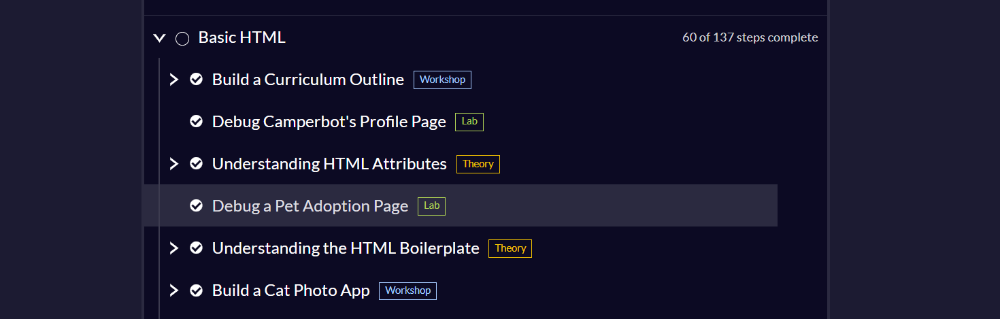
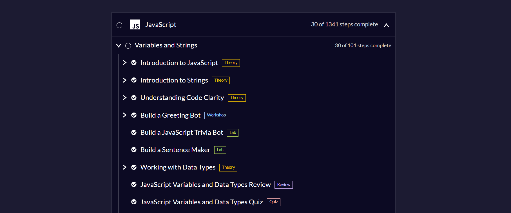
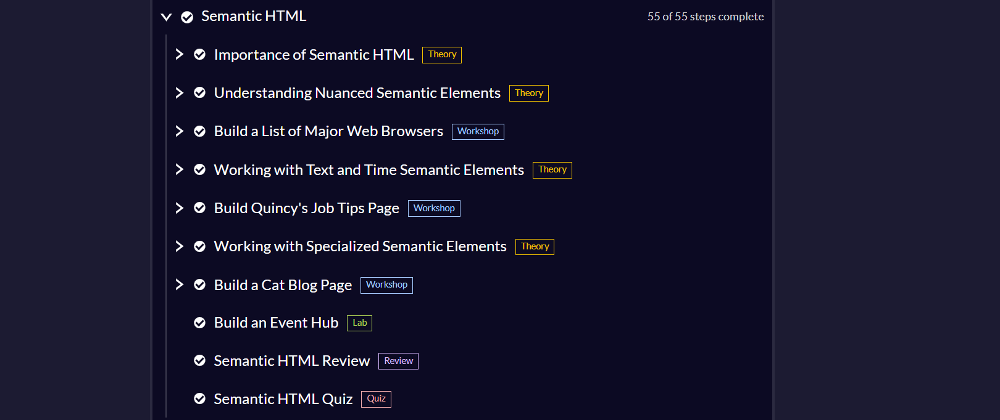

MY WORK
Projects and Progress
These projects show some of the work I completed while learning HTML, CSS, JavaScript, and web development through CodeSquad. Each assignment helped me build new skills and understand how websites are created.
CodeSquad Projects

Assignment 1: Basic HTML
I learned how to build the pieces.
I practiced creating the basic structure of a webpage and learned how HTML elements work together to organize content.
Skills practiced: HTML structure, headings, paragraphs, links, and page organization.

Assignment 2: Semantic HTML
I learned how to organize those pieces.
I started thinking more intentionally about webpage structure and how semantic HTML helps make content clearer and easier to navigate.
Skills practiced: HTML, navigation, links, images, and content structure.

Assignment 3: JavaScript Fundamentals
I started making those pieces do something
I began working with JavaScript variables, strings, and data types while creating small interactive projects like a greeting bot, trivia bot, and sentence maker.
Skills practiced: HTML, CSS, page layout, styling, and problem-solving.
What I Am Learning
One of the biggest things I have learned is that coding requires patience and attention to detail. A small mistake in a class name, file path, or tag can change how the entire page works. Each project is helping me become more comfortable testing, troubleshooting, and correcting my own code.